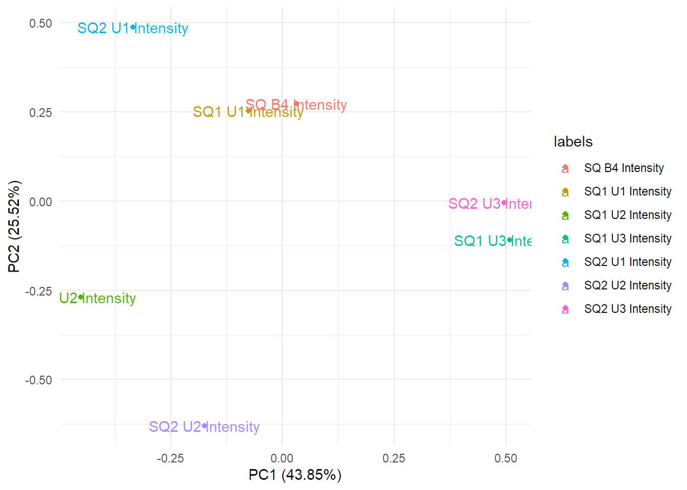
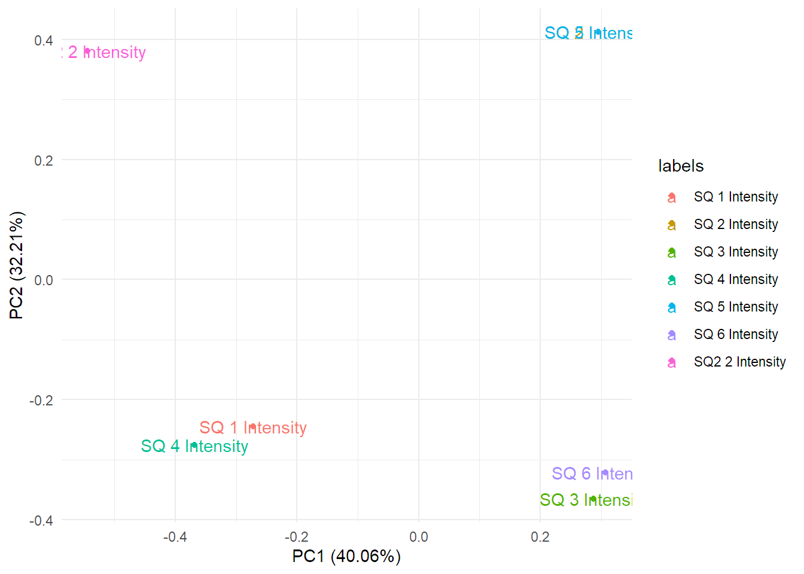
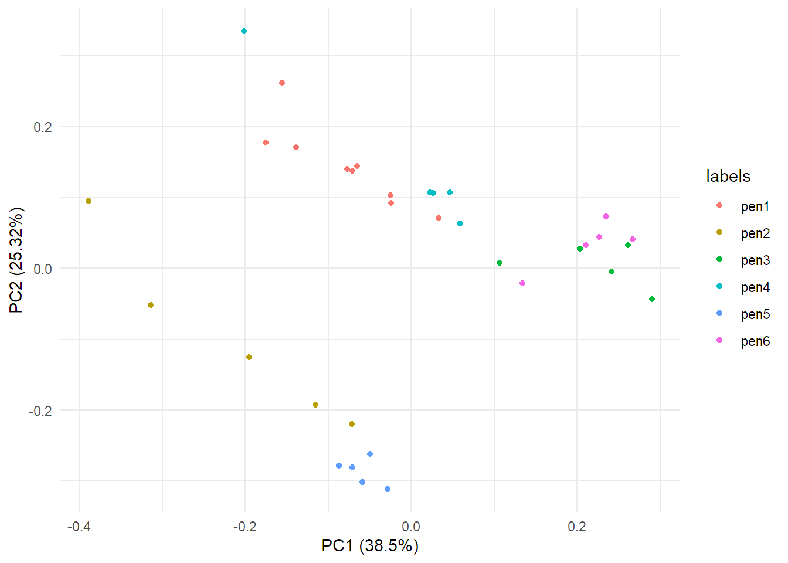

PiB
Last updated: 2021-09-27
Checks: 7 0
Knit directory: PIB_workflowr/data/
This reproducible R Markdown analysis was created with workflowr (version 1.6.2). The Checks tab describes the reproducibility checks that were applied when the results were created. The Past versions tab lists the development history.
Great! Since the R Markdown file has been committed to the Git repository, you know the exact version of the code that produced these results.
Great job! The global environment was empty. Objects defined in the global environment can affect the analysis in your R Markdown file in unknown ways. For reproduciblity it’s best to always run the code in an empty environment.
The command set.seed(20210909) was run prior to running the code in the R Markdown file. Setting a seed ensures that any results that rely on randomness, e.g. subsampling or permutations, are reproducible.
Great job! Recording the operating system, R version, and package versions is critical for reproducibility.
Nice! There were no cached chunks for this analysis, so you can be confident that you successfully produced the results during this run.
Great job! Using relative paths to the files within your workflowr project makes it easier to run your code on other machines.
Great! You are using Git for version control. Tracking code development and connecting the code version to the results is critical for reproducibility.
The results in this page were generated with repository version c29bb1c. See the Past versions tab to see a history of the changes made to the R Markdown and HTML files.
Note that you need to be careful to ensure that all relevant files for the analysis have been committed to Git prior to generating the results (you can use wflow_publish or wflow_git_commit). workflowr only checks the R Markdown file, but you know if there are other scripts or data files that it depends on. Below is the status of the Git repository when the results were generated:
Ignored files:
Ignored: .Rhistory
Ignored: .Rproj.user/
Ignored: analysis/.Rhistory
Untracked files:
Untracked: data/CONTRACT REGION OF INTERESTED EXPORTS/
Untracked: data/INK SQUARE ANALYSIS (TRAINING SET)-roi EXPORTS/
Untracked: data/STRIKES ANALYSIS (I TEST SET)-ROI EXPORTS/
Note that any generated files, e.g. HTML, png, CSS, etc., are not included in this status report because it is ok for generated content to have uncommitted changes.
These are the previous versions of the repository in which changes were made to the R Markdown (analysis/PiB.Rmd) and HTML (docs/PiB.html) files. If you’ve configured a remote Git repository (see ?wflow_git_remote), click on the hyperlinks in the table below to view the files as they were in that past version.
| File | Version | Author | Date | Message |
|---|---|---|---|---|
| Rmd | c29bb1c | marcsole96 | 2021-09-27 | changed labels |
| html | e38b246 | marcsole96 | 2021-09-24 | Build site. |
| Rmd | edea607 | marcsole96 | 2021-09-24 | wflow_publish("../analysis/*") |
| html | 5991c0d | marcsole96 | 2021-09-24 | Build site. |
| Rmd | 687bb6c | marcsole96 | 2021-09-24 | tried caret for pca model |
| html | ff35802 | marcsole96 | 2021-09-23 | Build site. |
| Rmd | e39c13d | marcsole96 | 2021-09-23 | clened things |
| html | 91d3e03 | marcsole96 | 2021-09-16 | Build site. |
| Rmd | a532404 | marcsole96 | 2021-09-16 | Added the first attempt to do a pca classification model |
| html | 91742f4 | marcsole96 | 2021-09-14 | Build site. |
| Rmd | 2b0be5d | marcsole96 | 2021-09-14 | made a PCA for all the training data |
| html | 691fdc3 | marcsole96 | 2021-09-14 | Build site. |
| Rmd | c93712f | marcsole96 | 2021-09-14 | made a PCA for all the training data |
| html | bdb8f53 | marcsole96 | 2021-09-14 | Build site. |
| Rmd | d642a48 | marcsole96 | 2021-09-14 | made a PCA for all the training data |
| html | 74d7559 | marcsole96 | 2021-09-14 | Build site. |
| Rmd | c4c4781 | marcsole96 | 2021-09-14 | Made a merged DF with all the training data |
| html | f9368cb | marcsole96 | 2021-09-14 | Build site. |
| Rmd | 9d0c7d4 | marcsole96 | 2021-09-14 | Created a merged DF with all the training data |
| html | aa47443 | marcsole96 | 2021-09-14 | Build site. |
| Rmd | 46897a7 | marcsole96 | 2021-09-14 | Created a merged DF with all the training data |
| html | 1404a14 | marcsole96 | 2021-09-13 | Build site. |
| Rmd | 39a620e | marcsole96 | 2021-09-13 | wflow_publish(“../analysis/PiB.Rmd”) |
| html | e44ec66 | marcsole96 | 2021-09-13 | Build site. |
| Rmd | 7df0598 | marcsole96 | 2021-09-13 | wflow_publish(c("../_workflowr.yml“,”../analysis/PiB.Rmd")) |
| html | a26decb | marcsole96 | 2021-09-12 | wflow_publish(“../analysis/index.Rmd”) |
| html | 5b3175d | marcsole96 | 2021-09-12 | Build site. |
| Rmd | 158e222 | marcsole96 | 2021-09-12 | wflow_publish(“../analysis/PiB.Rmd”) |
| html | 125ff6e | marcsole96 | 2021-09-10 | Build site. |
| Rmd | b2c2140 | marcsole96 | 2021-09-10 | wflow_publish(“../analysis/PiB.Rmd”) |
#setwd("../PIB_workflowr/data")
getwd()[1] "C:/Users/mysit/Documents/Bioinformatica/Semestre_3/Projecte_Palle/PIB_workflowr/data"library(tidyverse)Warning: package 'tidyverse' was built under R version 4.0.5-- Attaching packages --------------------------------------- tidyverse 1.3.1 --v ggplot2 3.3.3 v purrr 0.3.4
v tibble 3.0.3 v dplyr 1.0.5
v tidyr 1.1.3 v stringr 1.4.0
v readr 1.4.0 v forcats 0.5.1Warning: package 'tidyr' was built under R version 4.0.5Warning: package 'dplyr' was built under R version 4.0.5Warning: package 'forcats' was built under R version 4.0.5-- Conflicts ------------------------------------------ tidyverse_conflicts() --
x dplyr::filter() masks stats::filter()
x dplyr::lag() masks stats::lag()library(ggplot2)
library(ggfortify)Warning: package 'ggfortify' was built under R version 4.0.5library(Rtsne)Warning: package 'Rtsne' was built under R version 4.0.5library(reshape2)
Attaching package: 'reshape2'The following object is masked from 'package:tidyr':
smithstheme_set(theme_minimal())CONTRACT REGION OF INTERESTED EXPORTS
Page 1 contract exports
p1_initials_II <- read.table(file = "CONTRACT REGION OF INTERESTED EXPORTS/Page 1 contract exports/190910,21h19_II initials page 1.txt", sep = "")
p1_initials_III <- read.table(file = "CONTRACT REGION OF INTERESTED EXPORTS/Page 1 contract exports/190910,21h19_III initials page 1.txt", sep = "")
p1_initials_SF <- read.table(file = "CONTRACT REGION OF INTERESTED EXPORTS/Page 1 contract exports/190910,21h19_SF initials page 1.txt", sep = "")
colnames(p1_initials_SF) <- c("spectrum", "P1_SF_intensity")
colnames(p1_initials_II) <- c("spectrum", "P1_II_Intensity")
colnames(p1_initials_III) <- c("spectrum", "P1_III_Intensity")Page 2 contract exports
p2_initials_II <- read.table(file = "CONTRACT REGION OF INTERESTED EXPORTS/Page 2 contract exports/190910,23h44_II initials page 2.txt", sep = "")
p2_initials_III <- read.table(file = "CONTRACT REGION OF INTERESTED EXPORTS/Page 2 contract exports/190910,23h44_III initials page 2.txt", sep = "")
p2_initials_SF <- read.table(file = "CONTRACT REGION OF INTERESTED EXPORTS/Page 2 contract exports/190910,23h44_SF initials page 2.txt", sep = "")
colnames(p2_initials_SF) <- c("spectrum", "P2 SF Intensity")
colnames(p2_initials_II) <- c("spectrum", "P2 II Intensity")
colnames(p2_initials_III) <- c("spectrum", "P2 III Intensity")Page 3 contract export
p3_initials_II <- read.table(file = "CONTRACT REGION OF INTERESTED EXPORTS/Page 3 contract export/190910,01h50_II initials signature page 3.txt", sep = "")
p3_initials_III <- read.table(file = "CONTRACT REGION OF INTERESTED EXPORTS/Page 3 contract export/190910,01h50_III initials signature page 3.txt", sep = "")
p3_initials_SF <- read.table(file = "CONTRACT REGION OF INTERESTED EXPORTS/Page 3 contract export/190910,01h50_SFsignature page 3.txt", sep = "")
colnames(p3_initials_SF) <- c("spectrum", "P3 SF Intensity")
colnames(p3_initials_II) <- c("spectrum", "P3 II Intensity")
colnames(p3_initials_III) <- c("spectrum", "P3 III Intensity")INK SQUARE ANALYSIS (TRAINING SET)-roi EXPORTS
full squares
sq1_under_no1 <- read.table(file = "INK SQUARE ANALYSIS (TRAINING SET)-roi EXPORTS/full squares/Full square 1 underneat number 1.txt", sep = "")
sq1_under_no2 <- read.table(file = "INK SQUARE ANALYSIS (TRAINING SET)-roi EXPORTS/full squares/Full square 1 underneat number 2.txt", sep = "")
sq2_under_no1 <- read.table(file = "INK SQUARE ANALYSIS (TRAINING SET)-roi EXPORTS/full squares/Full square 2 underneat number 1.txt", sep = "")
sq_beside_no4 <- read.table(file = "INK SQUARE ANALYSIS (TRAINING SET)-roi EXPORTS/full squares/Full square beside number 4.txt", sep = "")
sq1_under_no3 <- read.table(file = "INK SQUARE ANALYSIS (TRAINING SET)-roi EXPORTS/full squares/Full square underneat number 3.txt", sep = "")
sq2_under_no2 <- read.table(file = "INK SQUARE ANALYSIS (TRAINING SET)-roi EXPORTS/full squares/II full square ink under number 2.txt", sep = "")
sq2_under_no3 <- read.table(file = "INK SQUARE ANALYSIS (TRAINING SET)-roi EXPORTS/full squares/II full square ink under number 3.txt", sep = "")
colnames(sq1_under_no1) <- c("spectrum", "SQ1 U1 Intensity")
colnames(sq1_under_no2) <- c("spectrum", "SQ1 U2 Intensity")
colnames(sq2_under_no1) <- c("spectrum", "SQ2 U1 Intensity")
colnames(sq_beside_no4) <- c("spectrum", "SQ B4 Intensity")
colnames(sq1_under_no3) <- c("spectrum", "SQ1 U3 Intensity")
colnames(sq2_under_no2) <- c("spectrum", "SQ2 U2 Intensity")
colnames(sq2_under_no3) <- c("spectrum", "SQ2 U3 Intensity")numbers
sq_no2 <- read.table(file = "INK SQUARE ANALYSIS (TRAINING SET)-roi EXPORTS/numbers/squares analysis_number 2.txt", sep = "")
sq_no3 <- read.table(file = "INK SQUARE ANALYSIS (TRAINING SET)-roi EXPORTS/numbers/squares analysis_number 3.txt", sep = "")
sq_no4 <- read.table(file = "INK SQUARE ANALYSIS (TRAINING SET)-roi EXPORTS/numbers/squares analysis_number 4.txt", sep = "")
sq_no1 <- read.table(file = "INK SQUARE ANALYSIS (TRAINING SET)-roi EXPORTS/numbers/squares analysis_number1.txt", sep = "")
sq_no2_II <- read.table(file = "INK SQUARE ANALYSIS (TRAINING SET)-roi EXPORTS/numbers/squares_analysis_number 2.txt", sep = "")
sq_no5 <- read.table(file = "INK SQUARE ANALYSIS (TRAINING SET)-roi EXPORTS/numbers/squares_analysis_number 5.txt", sep = "")
sq_no6 <- read.table(file = "INK SQUARE ANALYSIS (TRAINING SET)-roi EXPORTS/numbers/squares_analysis_number 6.txt", sep = "")
colnames(sq_no2) <- c("spectrum", "SQ 2 Intensity")
colnames(sq_no3) <- c("spectrum", "SQ 3 Intensity")
colnames(sq_no4) <- c("spectrum", "SQ 4 Intensity")
colnames(sq_no1) <- c("spectrum", "SQ 1 Intensity")
colnames(sq_no2_II) <- c("spectrum", "SQ2 2 Intensity") # I think this df should be sq2 from number 1
colnames(sq_no5) <- c("spectrum", "SQ 5 Intensity")
colnames(sq_no6) <- c("spectrum", "SQ 6 Intensity")split squares_each square 3 ROI
# square II under no1
sqII_no1_ROI1 <- read.table(file = "INK SQUARE ANALYSIS (TRAINING SET)-roi EXPORTS/split squares_each square 3 ROI/II square ink under number 1_ROI1.txt", sep = "")
sqII_no1_ROI2 <- read.table(file = "INK SQUARE ANALYSIS (TRAINING SET)-roi EXPORTS/split squares_each square 3 ROI/II square ink under number 1_ROI2.txt", sep = "")
sqII_no1_ROI3 <- read.table(file = "INK SQUARE ANALYSIS (TRAINING SET)-roi EXPORTS/split squares_each square 3 ROI/II square ink under number 1_ROI3.txt", sep = "")
colnames(sqII_no1_ROI1) <- c("spectrum", "SQ2 1 ROI1 Intensity")
colnames(sqII_no1_ROI2) <- c("spectrum", "SQ2 1 ROI2 Intensity")
colnames(sqII_no1_ROI3) <- c("spectrum", "SQ2 1 ROI3 Intensity")
# square above no5
sq_no5_ROI1 <- read.table(file = "INK SQUARE ANALYSIS (TRAINING SET)-roi EXPORTS/split squares_each square 3 ROI/square ink above number 5_ROI1.txt", sep = "")
sq_no5_ROI2 <- read.table(file = "INK SQUARE ANALYSIS (TRAINING SET)-roi EXPORTS/split squares_each square 3 ROI/square ink above number 5_ROI2.txt", sep = "")
sq_no5_ROI3 <- read.table(file = "INK SQUARE ANALYSIS (TRAINING SET)-roi EXPORTS/split squares_each square 3 ROI/square ink above number 5_ROI3.txt", sep = "")
colnames(sq_no5_ROI1) <- c("spectrum", "SQ 5 ROI1 Intensity")
colnames(sq_no5_ROI2) <- c("spectrum", "SQ 5 ROI2 Intensity")
colnames(sq_no5_ROI3) <- c("spectrum", "SQ 5 ROI3 Intensity")
# square above no6
sq_no6_ROI1 <- read.table(file = "INK SQUARE ANALYSIS (TRAINING SET)-roi EXPORTS/split squares_each square 3 ROI/square ink above number 6_ROI1.txt", sep = "")
sq_no6_ROI2 <- read.table(file = "INK SQUARE ANALYSIS (TRAINING SET)-roi EXPORTS/split squares_each square 3 ROI/square ink above number 6_ROI2.txt", sep = "")
sq_no6_ROI3 <- read.table(file = "INK SQUARE ANALYSIS (TRAINING SET)-roi EXPORTS/split squares_each square 3 ROI/square ink above number 6_ROI3.txt", sep = "")
colnames(sq_no6_ROI1) <- c("spectrum", "SQ 6 ROI1 Intensity")
colnames(sq_no6_ROI2) <- c("spectrum", "SQ 6 ROI2 Intensity")
colnames(sq_no6_ROI3) <- c("spectrum", "SQ 6 ROI3 Intensity")
# square beside no4
sq_no4_ROI1 <- read.table(file = "INK SQUARE ANALYSIS (TRAINING SET)-roi EXPORTS/split squares_each square 3 ROI/square ink beside number 4_ROI1.txt", sep = "")
sq_no4_ROI2 <- read.table(file = "INK SQUARE ANALYSIS (TRAINING SET)-roi EXPORTS/split squares_each square 3 ROI/square ink beside number 4_ROI2.txt", sep = "")
sq_no4_ROI3 <- read.table(file = "INK SQUARE ANALYSIS (TRAINING SET)-roi EXPORTS/split squares_each square 3 ROI/square ink beside number 4_ROI3.txt", sep = "")
colnames(sq_no4_ROI1) <- c("spectrum", "SQ 4 ROI1 Intensity")
colnames(sq_no4_ROI2) <- c("spectrum", "SQ 4 ROI2 Intensity")
colnames(sq_no4_ROI3) <- c("spectrum", "SQ 4 ROI3 Intensity")
# square I under no1
sqI_no1_ROI1 <- read.table(file = "INK SQUARE ANALYSIS (TRAINING SET)-roi EXPORTS/split squares_each square 3 ROI/square ink under number 1_ROI1.txt", sep = "")
sqI_no1_ROI2 <- read.table(file = "INK SQUARE ANALYSIS (TRAINING SET)-roi EXPORTS/split squares_each square 3 ROI/square ink under number 1_ROI2.txt", sep = "")
sqI_no1_ROI3 <- read.table(file = "INK SQUARE ANALYSIS (TRAINING SET)-roi EXPORTS/split squares_each square 3 ROI/square ink under number 1_ROI3.txt", sep = "")
colnames(sqI_no1_ROI1) <- c("spectrum", "SQI 1 ROI1 Intensity")
colnames(sqI_no1_ROI2) <- c("spectrum", "SQI 1 ROI2 Intensity")
colnames(sqI_no1_ROI3) <- c("spectrum", "SQI 1 ROI3 Intensity")
# square under no2
sq_no2_ROI1 <- read.table(file = "INK SQUARE ANALYSIS (TRAINING SET)-roi EXPORTS/split squares_each square 3 ROI/square ink under number 2_ROI1.txt", sep = "")
sq_no2_ROI2 <- read.table(file = "INK SQUARE ANALYSIS (TRAINING SET)-roi EXPORTS/split squares_each square 3 ROI/square ink under number 2_ROI2.txt", sep = "")
sq_no2_ROI3 <- read.table(file = "INK SQUARE ANALYSIS (TRAINING SET)-roi EXPORTS/split squares_each square 3 ROI/square ink under number 2_ROI3.txt", sep = "")
colnames(sq_no2_ROI1) <- c("spectrum", "SQ 2 ROI1 Intensity")
colnames(sq_no2_ROI2) <- c("spectrum", "SQ 2 ROI2 Intensity")
colnames(sq_no2_ROI3) <- c("spectrum", "SQ 2 ROI3 Intensity")
# square under no3
sq_no3_ROI1 <- read.table(file = "INK SQUARE ANALYSIS (TRAINING SET)-roi EXPORTS/split squares_each square 3 ROI/square ink under number 3_ROI1.txt", sep = "")
sq_no3_ROI2 <- read.table(file = "INK SQUARE ANALYSIS (TRAINING SET)-roi EXPORTS/split squares_each square 3 ROI/square ink under number 3_ROI2.txt", sep = "")
sq_no3_ROI3 <- read.table(file = "INK SQUARE ANALYSIS (TRAINING SET)-roi EXPORTS/split squares_each square 3 ROI/square ink under number 3_ROI3.txt", sep = "")
colnames(sq_no3_ROI1) <- c("spectrum", "SQ 3 ROI1 Intensity")
colnames(sq_no3_ROI2) <- c("spectrum", "SQ 3 ROI2 Intensity")
colnames(sq_no3_ROI3) <- c("spectrum", "SQ 3 ROI3 Intensity")STRIKES ANALYSIS (I TEST SET)-ROI EXPORTS
strike1 <- read.table(file = "STRIKES ANALYSIS (I TEST SET)-ROI EXPORTS/strike 1.txt", sep = "")
strike2 <- read.table(file = "STRIKES ANALYSIS (I TEST SET)-ROI EXPORTS/strike 2.txt", sep = "")
strike3 <- read.table(file = "STRIKES ANALYSIS (I TEST SET)-ROI EXPORTS/strike 3.txt", sep = "")
strike4 <- read.table(file = "STRIKES ANALYSIS (I TEST SET)-ROI EXPORTS/strike 4.txt", sep = "")
strike5 <- read.table(file = "STRIKES ANALYSIS (I TEST SET)-ROI EXPORTS/strike 5.txt", sep = "")
strike6 <- read.table(file = "STRIKES ANALYSIS (I TEST SET)-ROI EXPORTS/strike 6.txt", sep = "")
colnames(strike1) <- c("spectrum", "strike1 Intensity")
colnames(strike2) <- c("spectrum", "strike2 Intensity")
colnames(strike3) <- c("spectrum", "strike3 Intensity")
colnames(strike4) <- c("spectrum", "strike4 Intensity")
colnames(strike5) <- c("spectrum", "strike5 Intensity")
colnames(strike6) <- c("spectrum", "strike6 Intensity")test_data <- cbind(strike1, strike2[2], strike3[2], strike4[2], strike5[2], strike6[2])
training_data1 <- cbind(sq1_under_no1, sq2_under_no1[2], sq1_under_no2[2], sq2_under_no2[2], sq1_under_no3[2], sq2_under_no3[2],sq_beside_no4[2])
training_data2 <- cbind(sq_no1, sq_no2[2], sq_no2_II[2], sq_no3[2], sq_no4[2], sq_no5[2], sq_no6[2])
training_data3 <- cbind(sqI_no1_ROI1, sqI_no1_ROI2[2], sqI_no1_ROI3[2], sqII_no1_ROI1[2], sqII_no1_ROI2[2], sqII_no1_ROI3[2], sq_no2_ROI1[2], sq_no2_ROI2[2], sq_no2_ROI3[2], sq_no3_ROI1[2], sq_no3_ROI2[2], sq_no3_ROI3[2], sq_no4_ROI1[2], sq_no4_ROI2[2], sq_no4_ROI3[2], sq_no5_ROI1[2], sq_no5_ROI2[2], sq_no5_ROI3[2], sq_no6_ROI1[2], sq_no6_ROI2[2], sq_no6_ROI3[2])
contract<-cbind(p1_initials_II,p1_initials_III[2],p1_initials_SF[2],p2_initials_II[2],p2_initials_III[2],p2_initials_SF[2],p3_initials_II[2],p3_initials_III[2],p3_initials_SF[2])
rm(strike1,strike2,strike3,strike4,strike5,strike6,sq1_under_no1,sq2_under_no1,sq1_under_no2,sq2_under_no2,sq1_under_no3,sq2_under_no3,sq_no1,sq_no2,sq_no2_II,sq_no3,sq_no4,sq_no5,sq_no6,sqI_no1_ROI1,sqI_no1_ROI2,sqI_no1_ROI3,sqII_no1_ROI1,sqII_no1_ROI2,sqII_no1_ROI3,sq_no2_ROI1,sq_no2_ROI2,sq_no2_ROI3,sq_no3_ROI1, sq_no3_ROI2, sq_no3_ROI3, sq_no4_ROI1, sq_no4_ROI2, sq_no4_ROI3, sq_no5_ROI1, sq_no5_ROI2, sq_no5_ROI3, sq_no6_ROI1, sq_no6_ROI2, sq_no6_ROI3,p1_initials_II,p1_initials_III,p1_initials_SF,p2_initials_II,p2_initials_III,p2_initials_SF,p3_initials_II,p3_initials_III,p3_initials_SF,sq_beside_no4)#Simple intensities plots:
Testdata
test<-melt(test_data, id="spectrum")
ggplot(test, aes(spectrum,value,colour=variable)) + geom_point()
Training data 1
test<-melt(training_data1, id="spectrum")
ggplot(test, aes(spectrum,value,colour=variable)) + geom_point()
Training data 2
test<-melt(training_data2, id="spectrum")
ggplot(test, aes(spectrum,value,colour=variable)) + geom_point()
Training data 2
test<-melt(training_data3, id="spectrum")
ggplot(test, aes(spectrum,value,colour=variable)) + geom_point()
PCAs
Test_data
Test by transposing the data
t_test_data<-as.data.frame(t(test_data[-1]))
names(t_test_data)<-test_data$spectrum
t_test_data$labels=row.names(t_test_data)
t_test_data <- t_test_data %>% mutate(labels = factor(labels))
labels<-t_test_data$labels
data <- t_test_data %>%
select(-labels)
data<-as.matrix(data)
rownames(data) <- NULL
pr.out <- prcomp(data,scale=FALSE)
pr.out$x %>%
as_tibble() %>%
ggplot() +
geom_point(aes(PC1, PC2, color = labels), alpha = 0.5) +
theme_minimal() +
scale_shape_manual(values = c(4, 20))
Test by NOT transposing the data
data <- test_data %>%
select(-spectrum)
names=names(test_data[-1])Changing the columns so they are rows:
test<-as.data.frame(t(test_data[-1]))
names(test)<-test_data$spectrum
test$labels=row.names(test)#doing PCA with transposed
pca_res <- prcomp(test[0:4500], scale. = TRUE)
summary(pca_res)Importance of components:
PC1 PC2 PC3 PC4 PC5 PC6
Standard deviation 42.0322 34.8048 27.4609 24.3107 13.29690 3.618e-14
Proportion of Variance 0.3926 0.2692 0.1676 0.1313 0.03929 0.000e+00
Cumulative Proportion 0.3926 0.6618 0.8294 0.9607 1.00000 1.000e+00autoplot(pca_res,data=test,colour="labels", label=T)Warning: `select_()` was deprecated in dplyr 0.7.0.
Please use `select()` instead.
var_explained = pca_res$sdev^2 / sum(pca_res$sdev^2)
qplot(c(1:6), var_explained) +
geom_line() +
xlab("Principal Component") +
ylab("Variance Explained") +
ggtitle("Scree Plot") +
ylim(0, 1)
#doing PCA with unaltered data
pca_res <- prcomp(test_data[-1], scale. = TRUE)
summary(pca_res)Importance of components:
PC1 PC2 PC3 PC4 PC5 PC6
Standard deviation 1.9475 1.3914 0.45740 0.23695 0.05747 0.05038
Proportion of Variance 0.6321 0.3227 0.03487 0.00936 0.00055 0.00042
Cumulative Proportion 0.6321 0.9548 0.98967 0.99903 0.99958 1.00000print(pca_res)Standard deviations (1, .., p=6):
[1] 1.94751378 1.39139843 0.45739706 0.23695448 0.05747044 0.05037980
Rotation (n x k) = (6 x 6):
PC1 PC2 PC3 PC4 PC5
strike1 Intensity 0.50158388 -0.05438930 -0.41304998 0.2159102 -0.72480852
strike2 Intensity 0.07748344 0.70159839 -0.02124203 -0.6530221 -0.19561463
strike3 Intensity 0.49610616 -0.05832303 0.52344134 0.1610163 0.04778405
strike4 Intensity 0.49997563 -0.03448200 0.46753097 -0.2162897 0.06895147
strike5 Intensity 0.04553209 0.70675998 0.03361193 0.6630823 0.16943119
strike6 Intensity 0.49420625 -0.02648115 -0.57899281 -0.1206617 0.63296365
PC6
strike1 Intensity -0.05367061
strike2 Intensity 0.19131607
strike3 Intensity 0.66953469
strike4 Intensity -0.69189205
strike5 Intensity -0.17000673
strike6 Intensity 0.06800020autoplot(pca_res,data=test_data, label=T)
training_data1
Changing the columns so they are rows:
test<-as.data.frame(t(training_data1[-1]))
names(test)<-training_data1$spectrum
test$labels=row.names(test)#doing PCA
pca_res <- prcomp(test[0:4500], scale. = TRUE)
autoplot(pca_res,data=test,colour="labels", label=T)
training_data2
Changing the columns so they are rows:
test<-as.data.frame(t(training_data2[-1]))
names(test)<-training_data2$spectrum
test$labels=row.names(test)#doing PCA
pca_res <- prcomp(test[0:4500], scale. = TRUE)
autoplot(pca_res,data=test,colour="labels", label=T)
training_data3
Changing the columns so they are rows:
test<-as.data.frame(t(training_data3[-1]))
names(test)<-training_data3$spectrum
test$labels=row.names(test)#doing PCA
pca_res <- prcomp(test[0:4500], scale. = TRUE)
autoplot(pca_res,data=test,colour="labels", label=T)
#tSNE ## Test_data
#t-SNE is not deterministic. There is some inherent stochasticity with the generation of probability distributions
set.seed(14)
#doing t-SNE
tsne <- Rtsne(test_data[,-1], dims = 2, perplexity=30,
verbose=FALSE, max_iter = 500)
lowd_map<- data.frame(tsne$Y)
ggplot(lowd_map, aes(x= X1, y = X2)) + ggtitle("tSNE") +
geom_point()#How can I colorize each dot so it represents each strike??? test<-melt(test_data, id="spectrum")
test<-spread(test,spectrum,value)
tsne <- Rtsne(test[,-1], dims = 2, perplexity=1,
verbose=FALSE, max_iter = 500)
lowd_map<- data.frame(tsne$Y)
lowd_map$label <- factor(test$variable)
ggplot(lowd_map, aes(x= X1, y = X2)) + ggtitle("tSNE") +
geom_text(aes(label = label, color = label)) + geom_point(aes(color = label), alpha = 0.5)Train data 1
test<-melt(training_data1, id="spectrum")
test<-spread(test,spectrum,value)
tsne <- Rtsne(test[,-1], dims = 2, perplexity=1,
verbose=FALSE, max_iter = 500)
lowd_map<- data.frame(tsne$Y)
lowd_map$label <- factor(test$variable)
ggplot(lowd_map, aes(x= X1, y = X2)) + ggtitle("tSNE") +
geom_text(aes(label = label, color = label)) + geom_point(aes(color = label), alpha = 0.5)
Train data 2
test<-melt(training_data2, id="spectrum")
test<-spread(test,spectrum,value)
tsne <- Rtsne(test[,-1], dims = 2, perplexity=1,
verbose=FALSE, max_iter = 500,check_duplicates = FALSE)
lowd_map<- data.frame(tsne$Y)
lowd_map$label <- factor(test$variable)
ggplot(lowd_map, aes(x= X1, y = X2)) + ggtitle("tSNE") +
geom_text(aes(label = label, color = label)) + geom_point(aes(color = label), alpha = 0.5)Train data 3
test<-melt(training_data3, id="spectrum")
test<-spread(test,spectrum,value)
tsne <- Rtsne(test[,-1], dims = 2, perplexity=1,
verbose=FALSE, max_iter = 500)
lowd_map<- data.frame(tsne$Y)
lowd_map$label <- factor(test$variable)
ggplot(lowd_map, aes(x= X1, y = X2)) + ggtitle("tSNE") +
geom_text(aes(label = label, color = label,vjust = -0.4,hjust = -0.1),size=4,position=position_jitter(width=15,height=15)) + geom_point(aes(color = label), alpha = 0.5)Merge train_data on a single DF:
We have 3 DFs containging training_data
head(training_data1) spectrum SQ1 U1 Intensity SQ2 U1 Intensity SQ1 U2 Intensity SQ2 U2 Intensity
1 100.0 0.651830 1.20486 0.394444 0.333333
2 100.2 0.871414 1.44097 0.531944 0.453515
3 100.4 0.755687 1.27778 0.475000 0.408163
4 100.6 0.649852 1.13426 0.456944 0.336735
5 100.8 0.597428 1.08449 0.516667 1.075960
6 101.0 1.251240 1.20486 1.886110 0.961451
SQ1 U3 Intensity SQ2 U3 Intensity SQ B4 Intensity
1 0.0625000 0.0101695 0.667227
2 0.0312500 0.0576271 0.833613
3 0.0359375 0.0847458 0.638655
4 0.0250000 0.0406780 0.494118
5 0.0593750 0.0779661 0.608403
6 0.5812500 0.2542370 0.640336head(training_data2) spectrum SQ 1 Intensity SQ 2 Intensity SQ2 2 Intensity SQ 3 Intensity
1 100.0 1.39799 0.254967 1.14679 0.447950
2 100.2 1.52843 0.274834 1.42202 0.378549
3 100.4 1.42140 0.298013 1.14220 0.302839
4 100.6 1.28428 0.225166 1.11009 0.321767
5 100.8 1.24415 0.639073 1.30734 0.246057
6 101.0 3.91639 0.655629 4.96330 2.690850
SQ 4 Intensity SQ 5 Intensity SQ 6 Intensity
1 1.96786 0.254967 0.0349345
2 2.20000 0.274834 0.0262009
3 1.76786 0.298013 0.1222710
4 1.44286 0.225166 0.0436681
5 1.55357 0.639073 0.0698690
6 1.52143 0.655629 0.1004370head(training_data3) spectrum SQI 1 ROI1 Intensity SQI 1 ROI2 Intensity SQI 1 ROI3 Intensity
1 100.0 0.674242 0.250000 0.926667
2 100.2 1.109850 0.542208 0.956667
3 100.4 0.852273 0.512987 0.750000
4 100.6 0.791667 0.305195 0.806667
5 100.8 0.761364 0.324675 0.643333
6 101.0 1.723480 0.905844 1.206670
SQ2 1 ROI1 Intensity SQ2 1 ROI2 Intensity SQ2 1 ROI3 Intensity
1 1.08482 0.813665 1.195450
2 1.29911 0.981366 1.559090
3 1.22768 0.925466 1.172730
4 1.08929 0.621118 1.063640
5 1.11607 0.701863 0.881818
6 1.43304 0.832298 1.031820
SQ 2 ROI1 Intensity SQ 2 ROI2 Intensity SQ 2 ROI3 Intensity
1 0.687500 0.152047 0.0964912
2 0.920455 0.187135 0.0877193
3 0.698864 0.198830 0.1403510
4 0.636364 0.163743 0.1052630
5 0.960227 0.192982 0.1491230
6 2.903410 1.432750 0.7368420
SQ 3 ROI1 Intensity SQ 3 ROI2 Intensity SQ 3 ROI3 Intensity
1 0.0944444 0.0500 0.0116959
2 0.0666667 0.0250 0.0000000
3 0.0944444 0.0000 0.0000000
4 0.0444444 0.0250 0.0116959
5 0.1111110 0.0500 0.0233918
6 1.0222200 0.4875 0.3157890
SQ 4 ROI1 Intensity SQ 4 ROI2 Intensity SQ 4 ROI3 Intensity
1 0.631944 0.490909 0.480263
2 0.722222 0.681818 0.789474
3 0.527778 0.463636 0.565789
4 0.541667 0.381818 0.506579
5 0.479167 0.472727 0.598684
6 0.597222 0.590909 0.592105
SQ 5 ROI1 Intensity SQ 5 ROI2 Intensity SQ 5 ROI3 Intensity
1 0.32500 0.276042 0.241546
2 0.39375 0.250000 0.386473
3 0.36250 0.270833 0.420290
4 0.35625 0.307292 0.183575
5 1.38750 0.880208 1.004830
6 1.31875 0.614583 0.743961
SQ 6 ROI1 Intensity SQ 6 ROI2 Intensity SQ 6 ROI3 Intensity
1 0.0222222 0.0000000 0.0222222
2 0.1000000 0.0370370 0.0000000
3 0.1333330 0.0370370 0.0333333
4 0.0666667 0.0370370 0.0111111
5 0.0888889 0.0617284 0.1000000
6 0.2888890 0.2222220 0.2444440Each of them (despite having different regions analyzed) contain information on the squares which in turn can be used to identify the type of pen used.
#First step, transpose the data:
t_training_data1<-as.data.frame(t(training_data1[-1]))
names(t_training_data1)<-training_data1$spectrum
t_training_data1$labels=row.names(t_training_data1)
#removing the row headers
rownames(t_training_data1)<-c()
#moving labels to the beginning
t_training_data1<-t_training_data1 %>%
select(labels, everything())
head(select(t_training_data1,1:5)) labels 100 100.2 100.4 100.6
1 SQ1 U1 Intensity 0.6518300 0.8714140 0.7556870 0.649852
2 SQ2 U1 Intensity 1.2048600 1.4409700 1.2777800 1.134260
3 SQ1 U2 Intensity 0.3944440 0.5319440 0.4750000 0.456944
4 SQ2 U2 Intensity 0.3333330 0.4535150 0.4081630 0.336735
5 SQ1 U3 Intensity 0.0625000 0.0312500 0.0359375 0.025000
6 SQ2 U3 Intensity 0.0101695 0.0576271 0.0847458 0.040678#Same process is repeated for the next two DFs:
t_training_data2<-as.data.frame(t(training_data2[-1]))
names(t_training_data2)<-training_data2$spectrum
t_training_data2$labels=row.names(t_training_data2)
rownames(t_training_data2)<-c()
t_training_data2<-t_training_data2 %>%
select(labels, everything())
t_training_data3<-as.data.frame(t(training_data3[-1]))
names(t_training_data3)<-training_data3$spectrum
t_training_data3$labels=row.names(t_training_data3)
rownames(t_training_data3)<-c()
t_training_data3<-t_training_data3 %>%
select(labels, everything())Merging
training_DF<- rbind(t_training_data1, t_training_data2, t_training_data3)
(select(training_DF,1:5)) labels 100 100.2 100.4 100.6
1 SQ1 U1 Intensity 0.6518300 0.8714140 0.7556870 0.6498520
2 SQ2 U1 Intensity 1.2048600 1.4409700 1.2777800 1.1342600
3 SQ1 U2 Intensity 0.3944440 0.5319440 0.4750000 0.4569440
4 SQ2 U2 Intensity 0.3333330 0.4535150 0.4081630 0.3367350
5 SQ1 U3 Intensity 0.0625000 0.0312500 0.0359375 0.0250000
6 SQ2 U3 Intensity 0.0101695 0.0576271 0.0847458 0.0406780
7 SQ B4 Intensity 0.6672270 0.8336130 0.6386550 0.4941180
8 SQ 1 Intensity 1.3979900 1.5284300 1.4214000 1.2842800
9 SQ 2 Intensity 0.2549670 0.2748340 0.2980130 0.2251660
10 SQ2 2 Intensity 1.1467900 1.4220200 1.1422000 1.1100900
11 SQ 3 Intensity 0.4479500 0.3785490 0.3028390 0.3217670
12 SQ 4 Intensity 1.9678600 2.2000000 1.7678600 1.4428600
13 SQ 5 Intensity 0.2549670 0.2748340 0.2980130 0.2251660
14 SQ 6 Intensity 0.0349345 0.0262009 0.1222710 0.0436681
15 SQI 1 ROI1 Intensity 0.6742420 1.1098500 0.8522730 0.7916670
16 SQI 1 ROI2 Intensity 0.2500000 0.5422080 0.5129870 0.3051950
17 SQI 1 ROI3 Intensity 0.9266670 0.9566670 0.7500000 0.8066670
18 SQ2 1 ROI1 Intensity 1.0848200 1.2991100 1.2276800 1.0892900
19 SQ2 1 ROI2 Intensity 0.8136650 0.9813660 0.9254660 0.6211180
20 SQ2 1 ROI3 Intensity 1.1954500 1.5590900 1.1727300 1.0636400
21 SQ 2 ROI1 Intensity 0.6875000 0.9204550 0.6988640 0.6363640
22 SQ 2 ROI2 Intensity 0.1520470 0.1871350 0.1988300 0.1637430
23 SQ 2 ROI3 Intensity 0.0964912 0.0877193 0.1403510 0.1052630
24 SQ 3 ROI1 Intensity 0.0944444 0.0666667 0.0944444 0.0444444
25 SQ 3 ROI2 Intensity 0.0500000 0.0250000 0.0000000 0.0250000
26 SQ 3 ROI3 Intensity 0.0116959 0.0000000 0.0000000 0.0116959
27 SQ 4 ROI1 Intensity 0.6319440 0.7222220 0.5277780 0.5416670
28 SQ 4 ROI2 Intensity 0.4909090 0.6818180 0.4636360 0.3818180
29 SQ 4 ROI3 Intensity 0.4802630 0.7894740 0.5657890 0.5065790
30 SQ 5 ROI1 Intensity 0.3250000 0.3937500 0.3625000 0.3562500
31 SQ 5 ROI2 Intensity 0.2760420 0.2500000 0.2708330 0.3072920
32 SQ 5 ROI3 Intensity 0.2415460 0.3864730 0.4202900 0.1835750
33 SQ 6 ROI1 Intensity 0.0222222 0.1000000 0.1333330 0.0666667
34 SQ 6 ROI2 Intensity 0.0000000 0.0370370 0.0370370 0.0370370
35 SQ 6 ROI3 Intensity 0.0222222 0.0000000 0.0333333 0.0111111We could now simplify the DF by simply stating which square is which
#I did it manually because I don't know a good way of doing it automagically
avector <- c("1","2","1","2","1","2","SQ B4 ", "1","2","2","3","4","5","6","1","1","1","1","1","1","2","2","2","3","3","3","4","4","4","5","5","5","6","6","6")
# test<-training_DF %>% replace(1,c("1","2","1","2","1","2","SQ B4 ", "1","2","2","3","4","5","6","1","1","1","1","1","1","2","2","2","3","3","3","4","4","4","5","5","5","6","6","6"))
test<-training_DF
head(select(test,1:5)) labels 100 100.2 100.4 100.6
1 SQ1 U1 Intensity 0.6518300 0.8714140 0.7556870 0.649852
2 SQ2 U1 Intensity 1.2048600 1.4409700 1.2777800 1.134260
3 SQ1 U2 Intensity 0.3944440 0.5319440 0.4750000 0.456944
4 SQ2 U2 Intensity 0.3333330 0.4535150 0.4081630 0.336735
5 SQ1 U3 Intensity 0.0625000 0.0312500 0.0359375 0.025000
6 SQ2 U3 Intensity 0.0101695 0.0576271 0.0847458 0.040678simple_train_DF<-testPCA of training data
Now we could do a PCA from the whole data
#Removing the labels and the last column which is 0 to make the PCA work
test_pca<-test[-1]
test_pca<-test_pca[-4501]
pca_res <- prcomp(test_pca, scale. = TRUE)
autoplot(pca_res,data=test,colour="labels", label=F)
We can see the variance explained by the PCs:
var_explained = pca_res$sdev^2 / sum(pca_res$sdev^2)
qplot(c(1:35), var_explained) +
geom_line() +
xlab("Principal Component") +
ylab("Variance Explained") +
ggtitle("Scree Plot") +
ylim(0, 1)We can view the 3 PCs:
library(plotly)Warning: package 'plotly' was built under R version 4.0.5
Attaching package: 'plotly'The following object is masked from 'package:ggplot2':
last_plotThe following object is masked from 'package:stats':
filterThe following object is masked from 'package:graphics':
layoutdat_3d <- pca_res$x[,1:3] %>% as_tibble() %>% mutate(square = test$labels)
fig <- plot_ly(dat_3d, x = ~PC1, y = ~PC2, z = ~PC3,
color = ~square, size = I(100))
fig <- fig %>% add_markers()
fig <- fig %>% layout(scene = list(xaxis = list(title = 'PC1'),
yaxis = list(title = 'PC2'),
zaxis = list(title = 'PC3')))
figWarning in RColorBrewer::brewer.pal(N, "Set2"): n too large, allowed maximum for palette Set2 is 8
Returning the palette you asked for with that many colorsWarning in RColorBrewer::brewer.pal(N, "Set2"): n too large, allowed maximum for palette Set2 is 8
Returning the palette you asked for with that many colorsModel from PCA training Data:
I used this as a guide: https://rstudio-pubs-static.s3.amazonaws.com/285614_7921f4f9f340428f8f5ed8dc3c7f7943.html
#For the test data we should use the test_data
#For the training data we should use the training_DF
#(work in progress, I have to remember how this was done :/ )
#Get a dataframe with the values that will be used to predict
#First step, transpose the data:
t_test_data<-as.data.frame(t(test_data[-1]))
names(t_test_data)<-test_data$spectrum
t_test_data$labels=row.names(t_test_data)
#removing the row headers
rownames(t_test_data)<-c()
#moving labels to the beginning
t_test_data<-t_test_data %>%
select(labels, everything())
t_test_data<-t_test_data %>% replace(1,c("strike1","strike2","strike3","strike4","strike5","strike6"))
head(select(t_test_data,1:5)) labels 100 100.2 100.4 100.6
1 strike1 1.220990 1.243090 1.176800 0.955801
2 strike2 1.804470 2.251400 1.810060 1.703910
3 strike3 0.572254 0.953757 0.849711 0.699422
4 strike4 0.722826 0.956522 0.880435 0.728261
5 strike5 0.500000 0.540816 0.607143 0.612245
6 strike6 0.294737 0.652632 0.436842 0.368421test<-t_test_data[-1]
library(caret)Loading required package: lattice
Attaching package: 'caret'The following object is masked from 'package:purrr':
liftlibrary(e1071)Warning: package 'e1071' was built under R version 4.0.5pca = preProcess(x = simple_train_DF[,c(-1,-4502)], method = "pca", pcaComp = 35)
training_set <- predict(pca, simple_train_DF[-4502])
# put customer segment in to the last postion or column
#training_set <- simple_train_DF[c(2,3,1)]
test_set <- predict(pca, test)
#test_set <- test[c(2,3,1)]
trControl <- trainControl(method = "repeatedcv",
number = 10,
repeats = 3,
verboseIter = ifelse(is.null(getOption('knitr.in.progress')), TRUE, FALSE) # This crazy line is to show progress when you run the code but hide it when knitting.
)
training_x <- training_set %>% select(-labels) %>% as.data.frame()
training_y <- training_set$labels
car_ranger <- train(x = training_x,
y = training_y,
method = "ranger",
trControl = trControl
)Warning: Dropped unused factor level(s) in dependent variable: SQ 5 Intensity.Warning: Dropped unused factor level(s) in dependent variable: SQ 5 Intensity.
Warning: Dropped unused factor level(s) in dependent variable: SQ 5 Intensity.
Warning: Dropped unused factor level(s) in dependent variable: SQ 5 Intensity.
Warning: Dropped unused factor level(s) in dependent variable: SQ 5 Intensity.
Warning: Dropped unused factor level(s) in dependent variable: SQ 5 Intensity.Warning: Dropped unused factor level(s) in dependent variable: SQ 6 ROI1
Intensity.
Warning: Dropped unused factor level(s) in dependent variable: SQ 6 ROI1
Intensity.
Warning: Dropped unused factor level(s) in dependent variable: SQ 6 ROI1
Intensity.
Warning: Dropped unused factor level(s) in dependent variable: SQ 6 ROI1
Intensity.
Warning: Dropped unused factor level(s) in dependent variable: SQ 6 ROI1
Intensity.
Warning: Dropped unused factor level(s) in dependent variable: SQ 6 ROI1
Intensity.Warning: Dropped unused factor level(s) in dependent variable: SQ 3 ROI1
Intensity.
Warning: Dropped unused factor level(s) in dependent variable: SQ 3 ROI1
Intensity.
Warning: Dropped unused factor level(s) in dependent variable: SQ 3 ROI1
Intensity.
Warning: Dropped unused factor level(s) in dependent variable: SQ 3 ROI1
Intensity.
Warning: Dropped unused factor level(s) in dependent variable: SQ 3 ROI1
Intensity.
Warning: Dropped unused factor level(s) in dependent variable: SQ 3 ROI1
Intensity.Warning: Dropped unused factor level(s) in dependent variable: SQ 2 ROI1
Intensity, SQ 5 ROI1 Intensity, SQ B4 Intensity, SQ1 U1 Intensity, SQ1 U2
Intensity, SQI 1 ROI3 Intensity.
Warning: Dropped unused factor level(s) in dependent variable: SQ 2 ROI1
Intensity, SQ 5 ROI1 Intensity, SQ B4 Intensity, SQ1 U1 Intensity, SQ1 U2
Intensity, SQI 1 ROI3 Intensity.
Warning: Dropped unused factor level(s) in dependent variable: SQ 2 ROI1
Intensity, SQ 5 ROI1 Intensity, SQ B4 Intensity, SQ1 U1 Intensity, SQ1 U2
Intensity, SQI 1 ROI3 Intensity.
Warning: Dropped unused factor level(s) in dependent variable: SQ 2 ROI1
Intensity, SQ 5 ROI1 Intensity, SQ B4 Intensity, SQ1 U1 Intensity, SQ1 U2
Intensity, SQI 1 ROI3 Intensity.
Warning: Dropped unused factor level(s) in dependent variable: SQ 2 ROI1
Intensity, SQ 5 ROI1 Intensity, SQ B4 Intensity, SQ1 U1 Intensity, SQ1 U2
Intensity, SQI 1 ROI3 Intensity.
Warning: Dropped unused factor level(s) in dependent variable: SQ 2 ROI1
Intensity, SQ 5 ROI1 Intensity, SQ B4 Intensity, SQ1 U1 Intensity, SQ1 U2
Intensity, SQI 1 ROI3 Intensity.Warning: Dropped unused factor level(s) in dependent variable: SQ 2 Intensity,
SQ 2 ROI3 Intensity, SQ 3 ROI2 Intensity, SQ 4 Intensity, SQ 4 ROI3 Intensity,
SQ1 U3 Intensity, SQ2 1 ROI2 Intensity, SQ2 U1 Intensity.
Warning: Dropped unused factor level(s) in dependent variable: SQ 2 Intensity,
SQ 2 ROI3 Intensity, SQ 3 ROI2 Intensity, SQ 4 Intensity, SQ 4 ROI3 Intensity,
SQ1 U3 Intensity, SQ2 1 ROI2 Intensity, SQ2 U1 Intensity.
Warning: Dropped unused factor level(s) in dependent variable: SQ 2 Intensity,
SQ 2 ROI3 Intensity, SQ 3 ROI2 Intensity, SQ 4 Intensity, SQ 4 ROI3 Intensity,
SQ1 U3 Intensity, SQ2 1 ROI2 Intensity, SQ2 U1 Intensity.
Warning: Dropped unused factor level(s) in dependent variable: SQ 2 Intensity,
SQ 2 ROI3 Intensity, SQ 3 ROI2 Intensity, SQ 4 Intensity, SQ 4 ROI3 Intensity,
SQ1 U3 Intensity, SQ2 1 ROI2 Intensity, SQ2 U1 Intensity.
Warning: Dropped unused factor level(s) in dependent variable: SQ 2 Intensity,
SQ 2 ROI3 Intensity, SQ 3 ROI2 Intensity, SQ 4 Intensity, SQ 4 ROI3 Intensity,
SQ1 U3 Intensity, SQ2 1 ROI2 Intensity, SQ2 U1 Intensity.
Warning: Dropped unused factor level(s) in dependent variable: SQ 2 Intensity,
SQ 2 ROI3 Intensity, SQ 3 ROI2 Intensity, SQ 4 Intensity, SQ 4 ROI3 Intensity,
SQ1 U3 Intensity, SQ2 1 ROI2 Intensity, SQ2 U1 Intensity.Warning: Dropped unused factor level(s) in dependent variable: SQ 4 ROI1
Intensity, SQ 4 ROI2 Intensity, SQ 5 ROI2 Intensity, SQ 6 Intensity, SQI 1 ROI1
Intensity.
Warning: Dropped unused factor level(s) in dependent variable: SQ 4 ROI1
Intensity, SQ 4 ROI2 Intensity, SQ 5 ROI2 Intensity, SQ 6 Intensity, SQI 1 ROI1
Intensity.
Warning: Dropped unused factor level(s) in dependent variable: SQ 4 ROI1
Intensity, SQ 4 ROI2 Intensity, SQ 5 ROI2 Intensity, SQ 6 Intensity, SQI 1 ROI1
Intensity.
Warning: Dropped unused factor level(s) in dependent variable: SQ 4 ROI1
Intensity, SQ 4 ROI2 Intensity, SQ 5 ROI2 Intensity, SQ 6 Intensity, SQI 1 ROI1
Intensity.
Warning: Dropped unused factor level(s) in dependent variable: SQ 4 ROI1
Intensity, SQ 4 ROI2 Intensity, SQ 5 ROI2 Intensity, SQ 6 Intensity, SQI 1 ROI1
Intensity.
Warning: Dropped unused factor level(s) in dependent variable: SQ 4 ROI1
Intensity, SQ 4 ROI2 Intensity, SQ 5 ROI2 Intensity, SQ 6 Intensity, SQI 1 ROI1
Intensity.Warning: Dropped unused factor level(s) in dependent variable: SQ 1 Intensity,
SQ 6 ROI3 Intensity.
Warning: Dropped unused factor level(s) in dependent variable: SQ 1 Intensity,
SQ 6 ROI3 Intensity.
Warning: Dropped unused factor level(s) in dependent variable: SQ 1 Intensity,
SQ 6 ROI3 Intensity.
Warning: Dropped unused factor level(s) in dependent variable: SQ 1 Intensity,
SQ 6 ROI3 Intensity.
Warning: Dropped unused factor level(s) in dependent variable: SQ 1 Intensity,
SQ 6 ROI3 Intensity.
Warning: Dropped unused factor level(s) in dependent variable: SQ 1 Intensity,
SQ 6 ROI3 Intensity.Warning: Dropped unused factor level(s) in dependent variable: SQ 3 ROI3
Intensity, SQ2 1 ROI3 Intensity, SQ2 U3 Intensity, SQI 1 ROI2 Intensity.
Warning: Dropped unused factor level(s) in dependent variable: SQ 3 ROI3
Intensity, SQ2 1 ROI3 Intensity, SQ2 U3 Intensity, SQI 1 ROI2 Intensity.
Warning: Dropped unused factor level(s) in dependent variable: SQ 3 ROI3
Intensity, SQ2 1 ROI3 Intensity, SQ2 U3 Intensity, SQI 1 ROI2 Intensity.
Warning: Dropped unused factor level(s) in dependent variable: SQ 3 ROI3
Intensity, SQ2 1 ROI3 Intensity, SQ2 U3 Intensity, SQI 1 ROI2 Intensity.
Warning: Dropped unused factor level(s) in dependent variable: SQ 3 ROI3
Intensity, SQ2 1 ROI3 Intensity, SQ2 U3 Intensity, SQI 1 ROI2 Intensity.
Warning: Dropped unused factor level(s) in dependent variable: SQ 3 ROI3
Intensity, SQ2 1 ROI3 Intensity, SQ2 U3 Intensity, SQI 1 ROI2 Intensity.Warning: Dropped unused factor level(s) in dependent variable: SQ 2 ROI2
Intensity, SQ 3 Intensity, SQ2 1 ROI1 Intensity, SQ2 2 Intensity.
Warning: Dropped unused factor level(s) in dependent variable: SQ 2 ROI2
Intensity, SQ 3 Intensity, SQ2 1 ROI1 Intensity, SQ2 2 Intensity.
Warning: Dropped unused factor level(s) in dependent variable: SQ 2 ROI2
Intensity, SQ 3 Intensity, SQ2 1 ROI1 Intensity, SQ2 2 Intensity.
Warning: Dropped unused factor level(s) in dependent variable: SQ 2 ROI2
Intensity, SQ 3 Intensity, SQ2 1 ROI1 Intensity, SQ2 2 Intensity.
Warning: Dropped unused factor level(s) in dependent variable: SQ 2 ROI2
Intensity, SQ 3 Intensity, SQ2 1 ROI1 Intensity, SQ2 2 Intensity.
Warning: Dropped unused factor level(s) in dependent variable: SQ 2 ROI2
Intensity, SQ 3 Intensity, SQ2 1 ROI1 Intensity, SQ2 2 Intensity.Warning: Dropped unused factor level(s) in dependent variable: SQ 5 ROI3
Intensity, SQ 6 ROI2 Intensity, SQ2 U2 Intensity.
Warning: Dropped unused factor level(s) in dependent variable: SQ 5 ROI3
Intensity, SQ 6 ROI2 Intensity, SQ2 U2 Intensity.
Warning: Dropped unused factor level(s) in dependent variable: SQ 5 ROI3
Intensity, SQ 6 ROI2 Intensity, SQ2 U2 Intensity.
Warning: Dropped unused factor level(s) in dependent variable: SQ 5 ROI3
Intensity, SQ 6 ROI2 Intensity, SQ2 U2 Intensity.
Warning: Dropped unused factor level(s) in dependent variable: SQ 5 ROI3
Intensity, SQ 6 ROI2 Intensity, SQ2 U2 Intensity.
Warning: Dropped unused factor level(s) in dependent variable: SQ 5 ROI3
Intensity, SQ 6 ROI2 Intensity, SQ2 U2 Intensity.Warning: Dropped unused factor level(s) in dependent variable: SQ 3 ROI1
Intensity, SQ2 1 ROI1 Intensity.
Warning: Dropped unused factor level(s) in dependent variable: SQ 3 ROI1
Intensity, SQ2 1 ROI1 Intensity.
Warning: Dropped unused factor level(s) in dependent variable: SQ 3 ROI1
Intensity, SQ2 1 ROI1 Intensity.
Warning: Dropped unused factor level(s) in dependent variable: SQ 3 ROI1
Intensity, SQ2 1 ROI1 Intensity.
Warning: Dropped unused factor level(s) in dependent variable: SQ 3 ROI1
Intensity, SQ2 1 ROI1 Intensity.
Warning: Dropped unused factor level(s) in dependent variable: SQ 3 ROI1
Intensity, SQ2 1 ROI1 Intensity.Warning: Dropped unused factor level(s) in dependent variable: SQ 2 ROI1
Intensity, SQ 3 ROI3 Intensity, SQ 6 ROI2 Intensity, SQ2 U3 Intensity.
Warning: Dropped unused factor level(s) in dependent variable: SQ 2 ROI1
Intensity, SQ 3 ROI3 Intensity, SQ 6 ROI2 Intensity, SQ2 U3 Intensity.
Warning: Dropped unused factor level(s) in dependent variable: SQ 2 ROI1
Intensity, SQ 3 ROI3 Intensity, SQ 6 ROI2 Intensity, SQ2 U3 Intensity.
Warning: Dropped unused factor level(s) in dependent variable: SQ 2 ROI1
Intensity, SQ 3 ROI3 Intensity, SQ 6 ROI2 Intensity, SQ2 U3 Intensity.
Warning: Dropped unused factor level(s) in dependent variable: SQ 2 ROI1
Intensity, SQ 3 ROI3 Intensity, SQ 6 ROI2 Intensity, SQ2 U3 Intensity.
Warning: Dropped unused factor level(s) in dependent variable: SQ 2 ROI1
Intensity, SQ 3 ROI3 Intensity, SQ 6 ROI2 Intensity, SQ2 U3 Intensity.Warning: Dropped unused factor level(s) in dependent variable: SQ 6 ROI3
Intensity, SQ1 U1 Intensity.
Warning: Dropped unused factor level(s) in dependent variable: SQ 6 ROI3
Intensity, SQ1 U1 Intensity.
Warning: Dropped unused factor level(s) in dependent variable: SQ 6 ROI3
Intensity, SQ1 U1 Intensity.
Warning: Dropped unused factor level(s) in dependent variable: SQ 6 ROI3
Intensity, SQ1 U1 Intensity.
Warning: Dropped unused factor level(s) in dependent variable: SQ 6 ROI3
Intensity, SQ1 U1 Intensity.
Warning: Dropped unused factor level(s) in dependent variable: SQ 6 ROI3
Intensity, SQ1 U1 Intensity.Warning: Dropped unused factor level(s) in dependent variable: SQ 4 Intensity,
SQ 4 ROI3 Intensity, SQ2 U1 Intensity.
Warning: Dropped unused factor level(s) in dependent variable: SQ 4 Intensity,
SQ 4 ROI3 Intensity, SQ2 U1 Intensity.
Warning: Dropped unused factor level(s) in dependent variable: SQ 4 Intensity,
SQ 4 ROI3 Intensity, SQ2 U1 Intensity.
Warning: Dropped unused factor level(s) in dependent variable: SQ 4 Intensity,
SQ 4 ROI3 Intensity, SQ2 U1 Intensity.
Warning: Dropped unused factor level(s) in dependent variable: SQ 4 Intensity,
SQ 4 ROI3 Intensity, SQ2 U1 Intensity.
Warning: Dropped unused factor level(s) in dependent variable: SQ 4 Intensity,
SQ 4 ROI3 Intensity, SQ2 U1 Intensity.Warning: Dropped unused factor level(s) in dependent variable: SQ 2 ROI3
Intensity, SQ 5 ROI3 Intensity, SQ 6 Intensity, SQI 1 ROI1 Intensity.
Warning: Dropped unused factor level(s) in dependent variable: SQ 2 ROI3
Intensity, SQ 5 ROI3 Intensity, SQ 6 Intensity, SQI 1 ROI1 Intensity.
Warning: Dropped unused factor level(s) in dependent variable: SQ 2 ROI3
Intensity, SQ 5 ROI3 Intensity, SQ 6 Intensity, SQI 1 ROI1 Intensity.
Warning: Dropped unused factor level(s) in dependent variable: SQ 2 ROI3
Intensity, SQ 5 ROI3 Intensity, SQ 6 Intensity, SQI 1 ROI1 Intensity.
Warning: Dropped unused factor level(s) in dependent variable: SQ 2 ROI3
Intensity, SQ 5 ROI3 Intensity, SQ 6 Intensity, SQI 1 ROI1 Intensity.
Warning: Dropped unused factor level(s) in dependent variable: SQ 2 ROI3
Intensity, SQ 5 ROI3 Intensity, SQ 6 Intensity, SQI 1 ROI1 Intensity.Warning: Dropped unused factor level(s) in dependent variable: SQ 2 Intensity,
SQ 4 ROI1 Intensity, SQ B4 Intensity, SQ1 U3 Intensity, SQI 1 ROI3 Intensity.
Warning: Dropped unused factor level(s) in dependent variable: SQ 2 Intensity,
SQ 4 ROI1 Intensity, SQ B4 Intensity, SQ1 U3 Intensity, SQI 1 ROI3 Intensity.
Warning: Dropped unused factor level(s) in dependent variable: SQ 2 Intensity,
SQ 4 ROI1 Intensity, SQ B4 Intensity, SQ1 U3 Intensity, SQI 1 ROI3 Intensity.
Warning: Dropped unused factor level(s) in dependent variable: SQ 2 Intensity,
SQ 4 ROI1 Intensity, SQ B4 Intensity, SQ1 U3 Intensity, SQI 1 ROI3 Intensity.
Warning: Dropped unused factor level(s) in dependent variable: SQ 2 Intensity,
SQ 4 ROI1 Intensity, SQ B4 Intensity, SQ1 U3 Intensity, SQI 1 ROI3 Intensity.
Warning: Dropped unused factor level(s) in dependent variable: SQ 2 Intensity,
SQ 4 ROI1 Intensity, SQ B4 Intensity, SQ1 U3 Intensity, SQI 1 ROI3 Intensity.Warning: Dropped unused factor level(s) in dependent variable: SQ 4 ROI2
Intensity, SQ2 U2 Intensity.
Warning: Dropped unused factor level(s) in dependent variable: SQ 4 ROI2
Intensity, SQ2 U2 Intensity.
Warning: Dropped unused factor level(s) in dependent variable: SQ 4 ROI2
Intensity, SQ2 U2 Intensity.
Warning: Dropped unused factor level(s) in dependent variable: SQ 4 ROI2
Intensity, SQ2 U2 Intensity.
Warning: Dropped unused factor level(s) in dependent variable: SQ 4 ROI2
Intensity, SQ2 U2 Intensity.
Warning: Dropped unused factor level(s) in dependent variable: SQ 4 ROI2
Intensity, SQ2 U2 Intensity.Warning: Dropped unused factor level(s) in dependent variable: SQ 3 Intensity,
SQ 3 ROI2 Intensity, SQ 6 ROI1 Intensity, SQ2 1 ROI3 Intensity, SQ2 2 Intensity.
Warning: Dropped unused factor level(s) in dependent variable: SQ 3 Intensity,
SQ 3 ROI2 Intensity, SQ 6 ROI1 Intensity, SQ2 1 ROI3 Intensity, SQ2 2 Intensity.
Warning: Dropped unused factor level(s) in dependent variable: SQ 3 Intensity,
SQ 3 ROI2 Intensity, SQ 6 ROI1 Intensity, SQ2 1 ROI3 Intensity, SQ2 2 Intensity.
Warning: Dropped unused factor level(s) in dependent variable: SQ 3 Intensity,
SQ 3 ROI2 Intensity, SQ 6 ROI1 Intensity, SQ2 1 ROI3 Intensity, SQ2 2 Intensity.
Warning: Dropped unused factor level(s) in dependent variable: SQ 3 Intensity,
SQ 3 ROI2 Intensity, SQ 6 ROI1 Intensity, SQ2 1 ROI3 Intensity, SQ2 2 Intensity.
Warning: Dropped unused factor level(s) in dependent variable: SQ 3 Intensity,
SQ 3 ROI2 Intensity, SQ 6 ROI1 Intensity, SQ2 1 ROI3 Intensity, SQ2 2 Intensity.Warning: Dropped unused factor level(s) in dependent variable: SQ 5 Intensity,
SQI 1 ROI2 Intensity.
Warning: Dropped unused factor level(s) in dependent variable: SQ 5 Intensity,
SQI 1 ROI2 Intensity.
Warning: Dropped unused factor level(s) in dependent variable: SQ 5 Intensity,
SQI 1 ROI2 Intensity.
Warning: Dropped unused factor level(s) in dependent variable: SQ 5 Intensity,
SQI 1 ROI2 Intensity.
Warning: Dropped unused factor level(s) in dependent variable: SQ 5 Intensity,
SQI 1 ROI2 Intensity.
Warning: Dropped unused factor level(s) in dependent variable: SQ 5 Intensity,
SQI 1 ROI2 Intensity.Warning: Dropped unused factor level(s) in dependent variable: SQ 1 Intensity,
SQ 2 ROI2 Intensity, SQ 5 ROI1 Intensity, SQ 5 ROI2 Intensity, SQ1 U2 Intensity,
SQ2 1 ROI2 Intensity.
Warning: Dropped unused factor level(s) in dependent variable: SQ 1 Intensity,
SQ 2 ROI2 Intensity, SQ 5 ROI1 Intensity, SQ 5 ROI2 Intensity, SQ1 U2 Intensity,
SQ2 1 ROI2 Intensity.
Warning: Dropped unused factor level(s) in dependent variable: SQ 1 Intensity,
SQ 2 ROI2 Intensity, SQ 5 ROI1 Intensity, SQ 5 ROI2 Intensity, SQ1 U2 Intensity,
SQ2 1 ROI2 Intensity.
Warning: Dropped unused factor level(s) in dependent variable: SQ 1 Intensity,
SQ 2 ROI2 Intensity, SQ 5 ROI1 Intensity, SQ 5 ROI2 Intensity, SQ1 U2 Intensity,
SQ2 1 ROI2 Intensity.
Warning: Dropped unused factor level(s) in dependent variable: SQ 1 Intensity,
SQ 2 ROI2 Intensity, SQ 5 ROI1 Intensity, SQ 5 ROI2 Intensity, SQ1 U2 Intensity,
SQ2 1 ROI2 Intensity.
Warning: Dropped unused factor level(s) in dependent variable: SQ 1 Intensity,
SQ 2 ROI2 Intensity, SQ 5 ROI1 Intensity, SQ 5 ROI2 Intensity, SQ1 U2 Intensity,
SQ2 1 ROI2 Intensity.Warning: Dropped unused factor level(s) in dependent variable: SQ 2 Intensity,
SQ2 2 Intensity.
Warning: Dropped unused factor level(s) in dependent variable: SQ 2 Intensity,
SQ2 2 Intensity.
Warning: Dropped unused factor level(s) in dependent variable: SQ 2 Intensity,
SQ2 2 Intensity.
Warning: Dropped unused factor level(s) in dependent variable: SQ 2 Intensity,
SQ2 2 Intensity.
Warning: Dropped unused factor level(s) in dependent variable: SQ 2 Intensity,
SQ2 2 Intensity.
Warning: Dropped unused factor level(s) in dependent variable: SQ 2 Intensity,
SQ2 2 Intensity.Warning: Dropped unused factor level(s) in dependent variable: SQ 2 ROI1
Intensity, SQ 3 ROI1 Intensity, SQ 4 Intensity, SQ 4 ROI1 Intensity, SQ 6
Intensity, SQ1 U3 Intensity.
Warning: Dropped unused factor level(s) in dependent variable: SQ 2 ROI1
Intensity, SQ 3 ROI1 Intensity, SQ 4 Intensity, SQ 4 ROI1 Intensity, SQ 6
Intensity, SQ1 U3 Intensity.
Warning: Dropped unused factor level(s) in dependent variable: SQ 2 ROI1
Intensity, SQ 3 ROI1 Intensity, SQ 4 Intensity, SQ 4 ROI1 Intensity, SQ 6
Intensity, SQ1 U3 Intensity.
Warning: Dropped unused factor level(s) in dependent variable: SQ 2 ROI1
Intensity, SQ 3 ROI1 Intensity, SQ 4 Intensity, SQ 4 ROI1 Intensity, SQ 6
Intensity, SQ1 U3 Intensity.
Warning: Dropped unused factor level(s) in dependent variable: SQ 2 ROI1
Intensity, SQ 3 ROI1 Intensity, SQ 4 Intensity, SQ 4 ROI1 Intensity, SQ 6
Intensity, SQ1 U3 Intensity.
Warning: Dropped unused factor level(s) in dependent variable: SQ 2 ROI1
Intensity, SQ 3 ROI1 Intensity, SQ 4 Intensity, SQ 4 ROI1 Intensity, SQ 6
Intensity, SQ1 U3 Intensity.Warning: Dropped unused factor level(s) in dependent variable: SQ 2 ROI2
Intensity, SQ 3 ROI3 Intensity.
Warning: Dropped unused factor level(s) in dependent variable: SQ 2 ROI2
Intensity, SQ 3 ROI3 Intensity.
Warning: Dropped unused factor level(s) in dependent variable: SQ 2 ROI2
Intensity, SQ 3 ROI3 Intensity.
Warning: Dropped unused factor level(s) in dependent variable: SQ 2 ROI2
Intensity, SQ 3 ROI3 Intensity.
Warning: Dropped unused factor level(s) in dependent variable: SQ 2 ROI2
Intensity, SQ 3 ROI3 Intensity.
Warning: Dropped unused factor level(s) in dependent variable: SQ 2 ROI2
Intensity, SQ 3 ROI3 Intensity.Warning: Dropped unused factor level(s) in dependent variable: SQ B4 Intensity,
SQ1 U2 Intensity, SQ2 1 ROI3 Intensity, SQ2 U2 Intensity.
Warning: Dropped unused factor level(s) in dependent variable: SQ B4 Intensity,
SQ1 U2 Intensity, SQ2 1 ROI3 Intensity, SQ2 U2 Intensity.
Warning: Dropped unused factor level(s) in dependent variable: SQ B4 Intensity,
SQ1 U2 Intensity, SQ2 1 ROI3 Intensity, SQ2 U2 Intensity.
Warning: Dropped unused factor level(s) in dependent variable: SQ B4 Intensity,
SQ1 U2 Intensity, SQ2 1 ROI3 Intensity, SQ2 U2 Intensity.
Warning: Dropped unused factor level(s) in dependent variable: SQ B4 Intensity,
SQ1 U2 Intensity, SQ2 1 ROI3 Intensity, SQ2 U2 Intensity.
Warning: Dropped unused factor level(s) in dependent variable: SQ B4 Intensity,
SQ1 U2 Intensity, SQ2 1 ROI3 Intensity, SQ2 U2 Intensity.Warning: Dropped unused factor level(s) in dependent variable: SQ 2 ROI3
Intensity, SQ 5 ROI3 Intensity, SQ2 1 ROI1 Intensity, SQ2 1 ROI2 Intensity, SQI
1 ROI2 Intensity.
Warning: Dropped unused factor level(s) in dependent variable: SQ 2 ROI3
Intensity, SQ 5 ROI3 Intensity, SQ2 1 ROI1 Intensity, SQ2 1 ROI2 Intensity, SQI
1 ROI2 Intensity.
Warning: Dropped unused factor level(s) in dependent variable: SQ 2 ROI3
Intensity, SQ 5 ROI3 Intensity, SQ2 1 ROI1 Intensity, SQ2 1 ROI2 Intensity, SQI
1 ROI2 Intensity.
Warning: Dropped unused factor level(s) in dependent variable: SQ 2 ROI3
Intensity, SQ 5 ROI3 Intensity, SQ2 1 ROI1 Intensity, SQ2 1 ROI2 Intensity, SQI
1 ROI2 Intensity.
Warning: Dropped unused factor level(s) in dependent variable: SQ 2 ROI3
Intensity, SQ 5 ROI3 Intensity, SQ2 1 ROI1 Intensity, SQ2 1 ROI2 Intensity, SQI
1 ROI2 Intensity.
Warning: Dropped unused factor level(s) in dependent variable: SQ 2 ROI3
Intensity, SQ 5 ROI3 Intensity, SQ2 1 ROI1 Intensity, SQ2 1 ROI2 Intensity, SQI
1 ROI2 Intensity.Warning: Dropped unused factor level(s) in dependent variable: SQ 3 Intensity,
SQ 3 ROI2 Intensity, SQ 4 ROI3 Intensity.
Warning: Dropped unused factor level(s) in dependent variable: SQ 3 Intensity,
SQ 3 ROI2 Intensity, SQ 4 ROI3 Intensity.
Warning: Dropped unused factor level(s) in dependent variable: SQ 3 Intensity,
SQ 3 ROI2 Intensity, SQ 4 ROI3 Intensity.
Warning: Dropped unused factor level(s) in dependent variable: SQ 3 Intensity,
SQ 3 ROI2 Intensity, SQ 4 ROI3 Intensity.
Warning: Dropped unused factor level(s) in dependent variable: SQ 3 Intensity,
SQ 3 ROI2 Intensity, SQ 4 ROI3 Intensity.
Warning: Dropped unused factor level(s) in dependent variable: SQ 3 Intensity,
SQ 3 ROI2 Intensity, SQ 4 ROI3 Intensity.Warning: Dropped unused factor level(s) in dependent variable: SQ 1 Intensity,
SQ1 U1 Intensity, SQ2 U1 Intensity.
Warning: Dropped unused factor level(s) in dependent variable: SQ 1 Intensity,
SQ1 U1 Intensity, SQ2 U1 Intensity.
Warning: Dropped unused factor level(s) in dependent variable: SQ 1 Intensity,
SQ1 U1 Intensity, SQ2 U1 Intensity.
Warning: Dropped unused factor level(s) in dependent variable: SQ 1 Intensity,
SQ1 U1 Intensity, SQ2 U1 Intensity.
Warning: Dropped unused factor level(s) in dependent variable: SQ 1 Intensity,
SQ1 U1 Intensity, SQ2 U1 Intensity.
Warning: Dropped unused factor level(s) in dependent variable: SQ 1 Intensity,
SQ1 U1 Intensity, SQ2 U1 Intensity.Warning: Dropped unused factor level(s) in dependent variable: SQ 5 ROI2
Intensity, SQ2 U3 Intensity.
Warning: Dropped unused factor level(s) in dependent variable: SQ 5 ROI2
Intensity, SQ2 U3 Intensity.
Warning: Dropped unused factor level(s) in dependent variable: SQ 5 ROI2
Intensity, SQ2 U3 Intensity.
Warning: Dropped unused factor level(s) in dependent variable: SQ 5 ROI2
Intensity, SQ2 U3 Intensity.
Warning: Dropped unused factor level(s) in dependent variable: SQ 5 ROI2
Intensity, SQ2 U3 Intensity.
Warning: Dropped unused factor level(s) in dependent variable: SQ 5 ROI2
Intensity, SQ2 U3 Intensity.Warning: Dropped unused factor level(s) in dependent variable: SQ 4 ROI2
Intensity, SQ 6 ROI1 Intensity, SQ 6 ROI2 Intensity, SQI 1 ROI3 Intensity.
Warning: Dropped unused factor level(s) in dependent variable: SQ 4 ROI2
Intensity, SQ 6 ROI1 Intensity, SQ 6 ROI2 Intensity, SQI 1 ROI3 Intensity.
Warning: Dropped unused factor level(s) in dependent variable: SQ 4 ROI2
Intensity, SQ 6 ROI1 Intensity, SQ 6 ROI2 Intensity, SQI 1 ROI3 Intensity.
Warning: Dropped unused factor level(s) in dependent variable: SQ 4 ROI2
Intensity, SQ 6 ROI1 Intensity, SQ 6 ROI2 Intensity, SQI 1 ROI3 Intensity.
Warning: Dropped unused factor level(s) in dependent variable: SQ 4 ROI2
Intensity, SQ 6 ROI1 Intensity, SQ 6 ROI2 Intensity, SQI 1 ROI3 Intensity.
Warning: Dropped unused factor level(s) in dependent variable: SQ 4 ROI2
Intensity, SQ 6 ROI1 Intensity, SQ 6 ROI2 Intensity, SQI 1 ROI3 Intensity.Warning: Dropped unused factor level(s) in dependent variable: SQ 5 Intensity,
SQ 5 ROI1 Intensity, SQ 6 ROI3 Intensity, SQI 1 ROI1 Intensity.
Warning: Dropped unused factor level(s) in dependent variable: SQ 5 Intensity,
SQ 5 ROI1 Intensity, SQ 6 ROI3 Intensity, SQI 1 ROI1 Intensity.
Warning: Dropped unused factor level(s) in dependent variable: SQ 5 Intensity,
SQ 5 ROI1 Intensity, SQ 6 ROI3 Intensity, SQI 1 ROI1 Intensity.
Warning: Dropped unused factor level(s) in dependent variable: SQ 5 Intensity,
SQ 5 ROI1 Intensity, SQ 6 ROI3 Intensity, SQI 1 ROI1 Intensity.
Warning: Dropped unused factor level(s) in dependent variable: SQ 5 Intensity,
SQ 5 ROI1 Intensity, SQ 6 ROI3 Intensity, SQI 1 ROI1 Intensity.
Warning: Dropped unused factor level(s) in dependent variable: SQ 5 Intensity,
SQ 5 ROI1 Intensity, SQ 6 ROI3 Intensity, SQI 1 ROI1 Intensity.predicted<- predict(car_ranger, newdata = test_set[,-1])
predicted[1] SQ 2 ROI3 Intensity SQ 4 Intensity SQ 2 ROI3 Intensity
[4] SQ B4 Intensity SQ 2 ROI3 Intensity SQ 6 Intensity
35 Levels: SQ 1 Intensity SQ 2 Intensity ... SQI 1 ROI3 Intensity
sessionInfo()R version 4.0.4 (2021-02-15)
Platform: x86_64-w64-mingw32/x64 (64-bit)
Running under: Windows 10 x64 (build 19043)
Matrix products: default
locale:
[1] LC_COLLATE=Catalan_Spain.1252 LC_CTYPE=Catalan_Spain.1252
[3] LC_MONETARY=Catalan_Spain.1252 LC_NUMERIC=C
[5] LC_TIME=Catalan_Spain.1252
attached base packages:
[1] stats graphics grDevices utils datasets methods base
other attached packages:
[1] e1071_1.7-6 caret_6.0-86 lattice_0.20-41 plotly_4.9.3
[5] reshape2_1.4.4 Rtsne_0.15 ggfortify_0.4.11 forcats_0.5.1
[9] stringr_1.4.0 dplyr_1.0.5 purrr_0.3.4 readr_1.4.0
[13] tidyr_1.1.3 tibble_3.0.3 ggplot2_3.3.3 tidyverse_1.3.1
loaded via a namespace (and not attached):
[1] nlme_3.1-149 fs_1.5.0 lubridate_1.7.10
[4] RColorBrewer_1.1-2 httr_1.4.2 rprojroot_2.0.2
[7] tools_4.0.4 backports_1.1.10 bslib_0.2.4
[10] utf8_1.2.1 R6_2.5.0 rpart_4.1-15
[13] DBI_1.1.1 lazyeval_0.2.2 colorspace_1.4-1
[16] nnet_7.3-14 withr_2.4.2 tidyselect_1.1.0
[19] gridExtra_2.3 compiler_4.0.4 git2r_0.28.0
[22] cli_2.4.0 rvest_1.0.0 xml2_1.3.2
[25] labeling_0.4.2 sass_0.3.1 scales_1.1.1
[28] proxy_0.4-25 digest_0.6.25 rmarkdown_2.7
[31] pkgconfig_2.0.3 htmltools_0.5.1.1 dbplyr_2.1.1
[34] htmlwidgets_1.5.3 rlang_0.4.10 readxl_1.3.1
[37] rstudioapi_0.13 jquerylib_0.1.3 farver_2.0.3
[40] generics_0.1.0 jsonlite_1.7.2 crosstalk_1.1.1
[43] ModelMetrics_1.2.2.2 magrittr_2.0.1 Matrix_1.2-18
[46] Rcpp_1.0.5 munsell_0.5.0 fansi_0.4.1
[49] lifecycle_1.0.0 pROC_1.17.0.1 stringi_1.5.3
[52] whisker_0.4 yaml_2.2.1 MASS_7.3-53
[55] plyr_1.8.6 recipes_0.1.16 grid_4.0.4
[58] promises_1.2.0.1 crayon_1.4.1 splines_4.0.4
[61] haven_2.3.1 hms_1.0.0 knitr_1.30
[64] ps_1.6.0 pillar_1.6.0 ranger_0.12.1
[67] stats4_4.0.4 codetools_0.2-18 reprex_2.0.0
[70] glue_1.4.2 evaluate_0.14 data.table_1.13.0
[73] modelr_0.1.8 vctrs_0.3.7 httpuv_1.5.5
[76] foreach_1.5.1 cellranger_1.1.0 gtable_0.3.0
[79] assertthat_0.2.1 gower_0.2.2 xfun_0.18
[82] prodlim_2019.11.13 broom_0.7.6 later_1.1.0.1
[85] survival_3.2-7 class_7.3-17 viridisLite_0.4.0
[88] timeDate_3043.102 iterators_1.0.13 lava_1.6.9
[91] workflowr_1.6.2 ellipsis_0.3.1 ipred_0.9-10